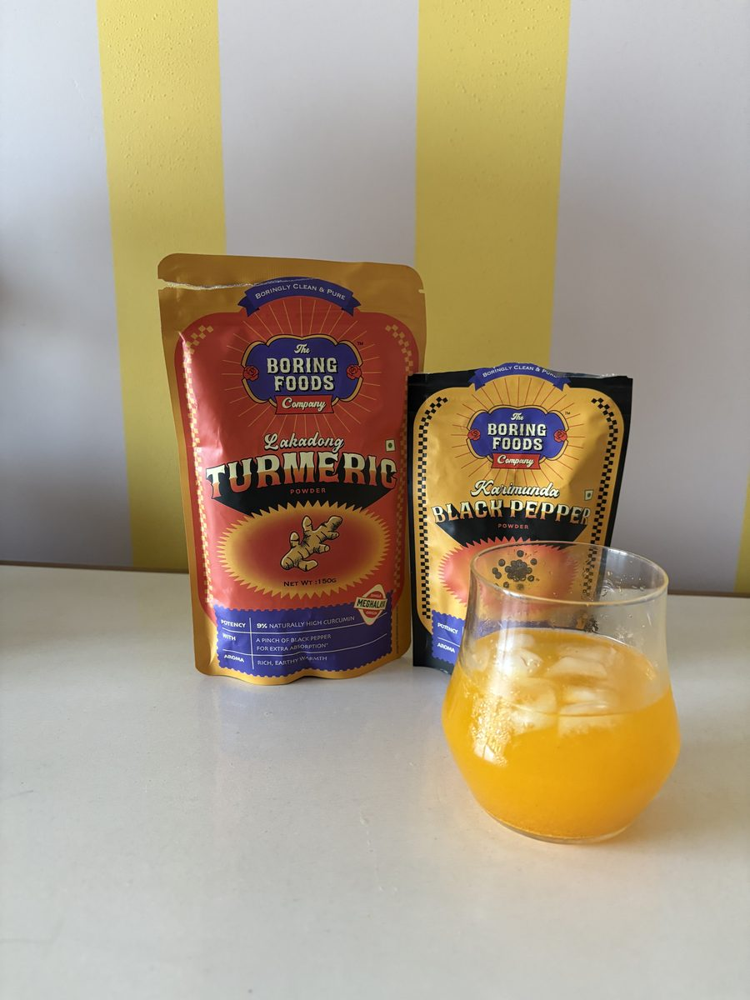

Turmeric Lemonade
Ingredients
- ½ tsp Lakadong turmeric powder
- 4 tsp lemon juice
- Salt and pepper to taste
- 100 ml cold water
Method
Mix turmeric, salt and pepper with the lemon juice thoroughly. Add to a glass of iced water, stir, and enjoy.
Optional: add some carbonated water for an extra refreshing kick.